送审版本 v1.0 · iPhone 与 iPad · iOS / iPadOS 17.0+
送审版本 v1.0 · iPhone 与 iPad · iOS / iPadOS 17.0+ 轻扫 PDF
扫描纸张、导入文件或图片，整理并编辑 PDF；也能像在纸上一样填写、签署、预览和导出。文档默认在设备本地处理，不需要注册账号。
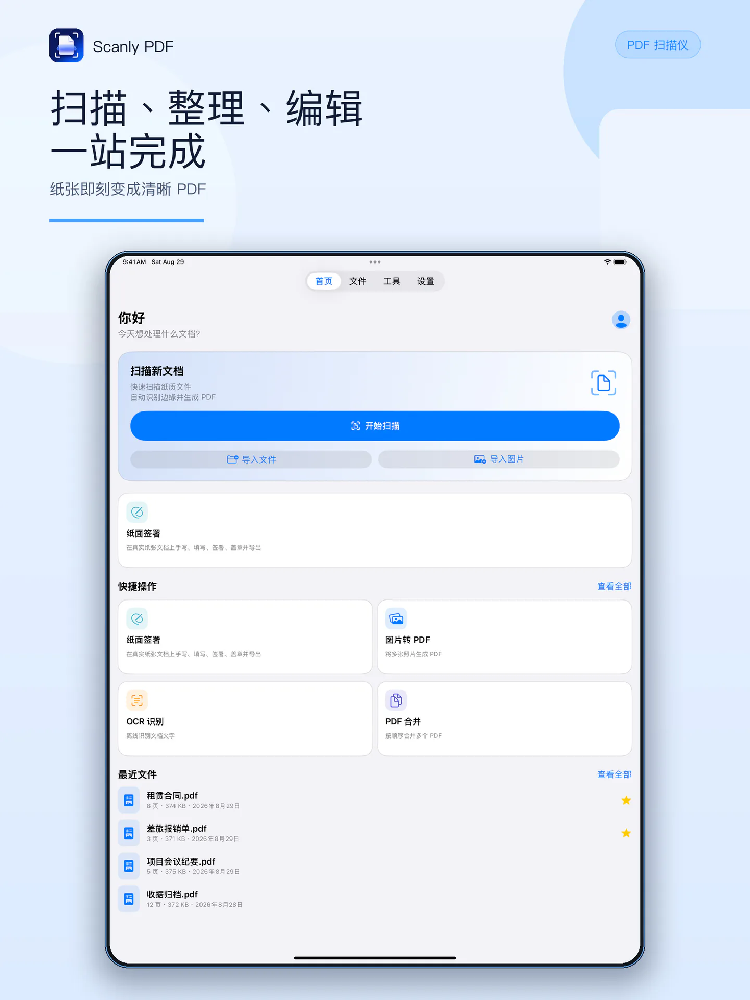
扫描与导入
使用文稿扫描，也可从“文件”或系统照片选择器导入 PDF 和图片；导入后直接进入对应的查看或处理界面。
PDF 文字编辑
识别文档文字并在原位置替换，自动参考原文字颜色、大小与版式，也可手动调整字体、字号、颜色和对齐。
纸面填写与签署
在真实纸张式页面中添加手写、文字、日期、勾选、签名、印章、指纹与高亮，并随时预览最终成品。
完整 PDF 工具箱
覆盖合并、拆分、提取页面、页面管理、压缩、水印、签名、密码保护、图片转 PDF 和 OCR。
文件井然有序
支持搜索、收藏、排序、文件夹和最近删除。删除操作会核对真实文件状态，避免重复移动或错误提示。
本地优先
无需账号，不接入广告、分析或跟踪 SDK。文档、OCR 结果和签署素材默认保存在设备沙盒。
SUBMISSION BUILD · 2026.08.29
iPhone 与 iPad 完整体验
送审版本已完成双语界面、核心工具与展示图整理。
- 首页导入直接进入工作流导入 PDF 会打开文档阅读与编辑界面；导入图片会进入图片转 PDF 流程。
- PDF 文字原位替换查找替换保留原位置，并支持键盘收起和自定义文字参数。
- 纸面签署相机体验相机、裁切和编辑界面适配安全区域，避免顶部发白或按钮被遮挡。
- 全部工具直接可用当前版本没有订阅、App 内购买、付费墙或 Pro 功能限制。
IPHONE 6.5-INCH
iPhone 真实界面
从扫描与导入，到签署、导出、工具箱、文件库和隐私设置。

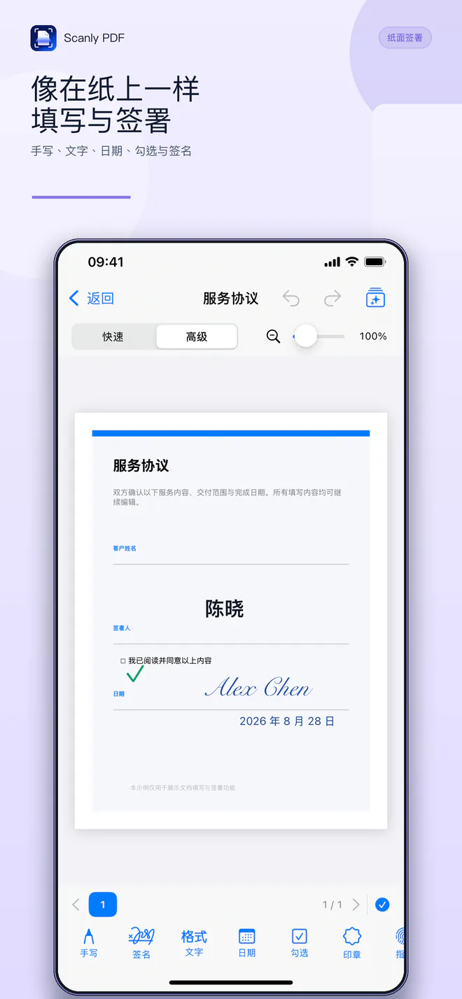
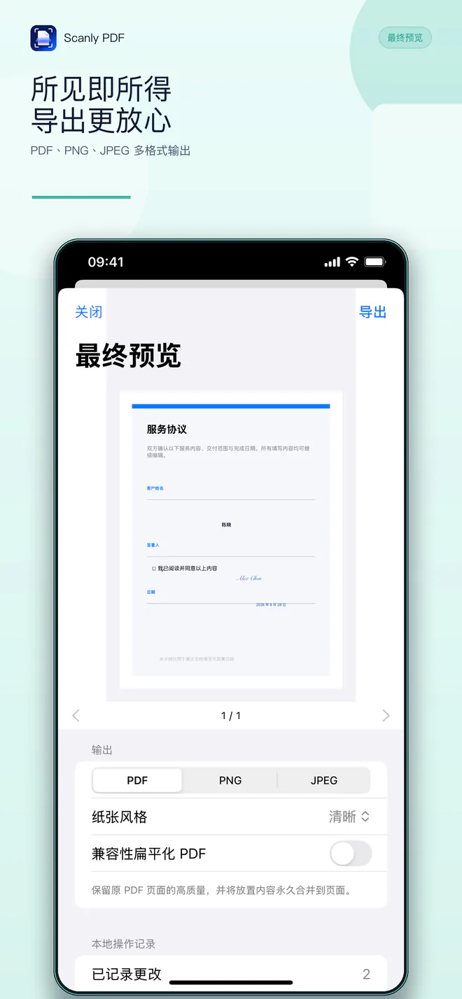
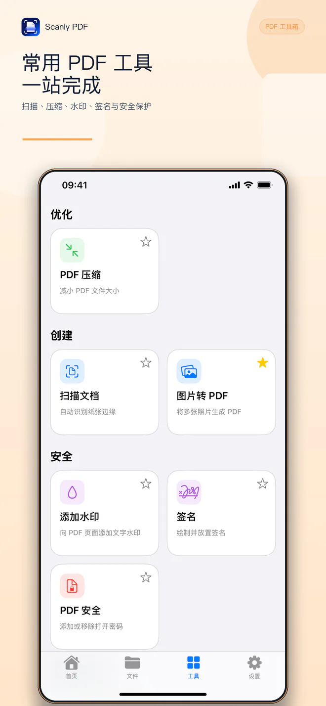
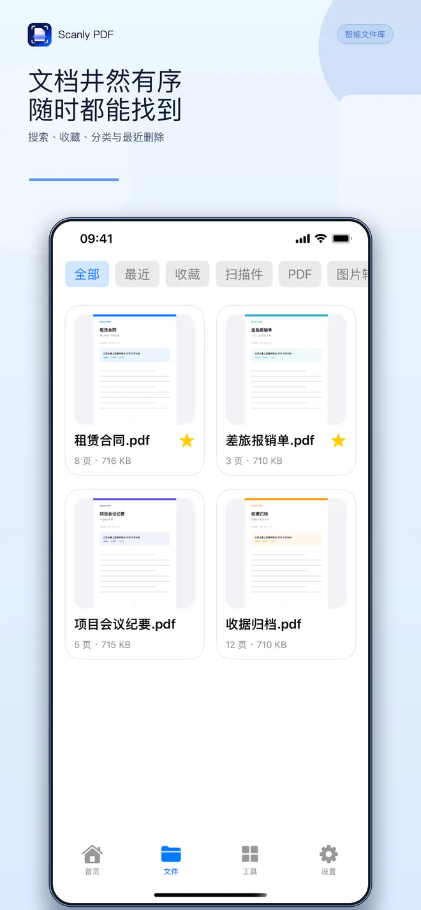
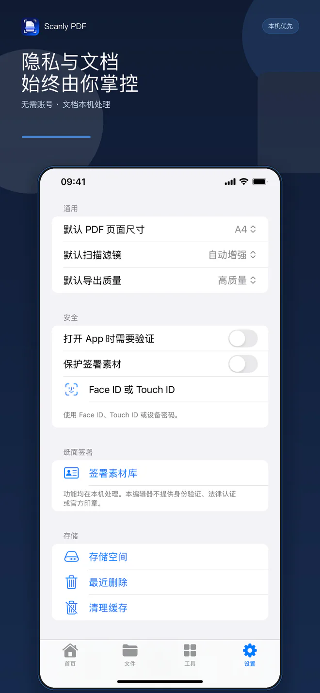
IPAD 13-INCH
iPad 真实界面
为大屏重新排布的文档工作区，保留完整工具栏、预览和文件管理能力。
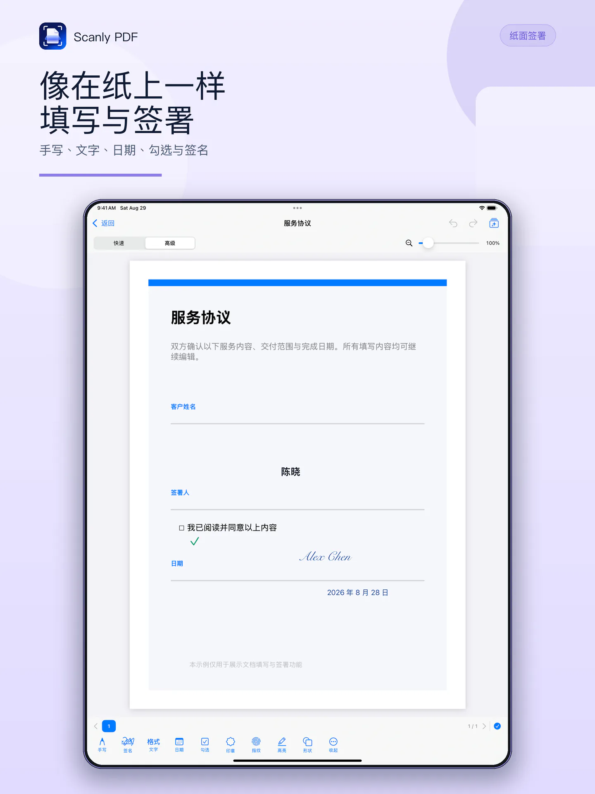
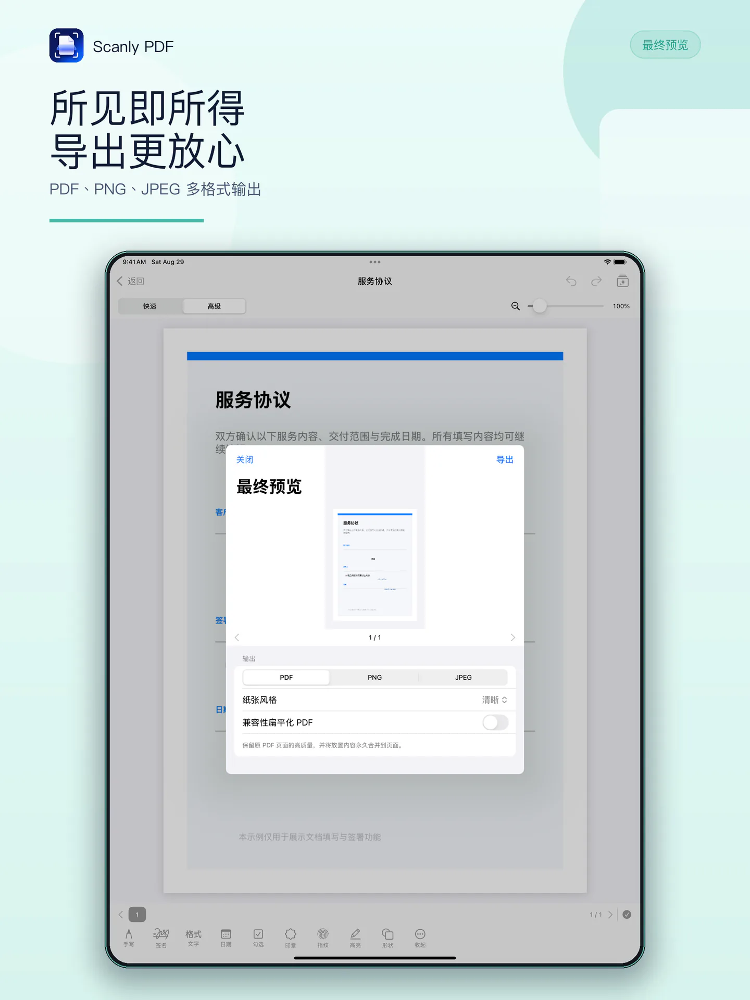
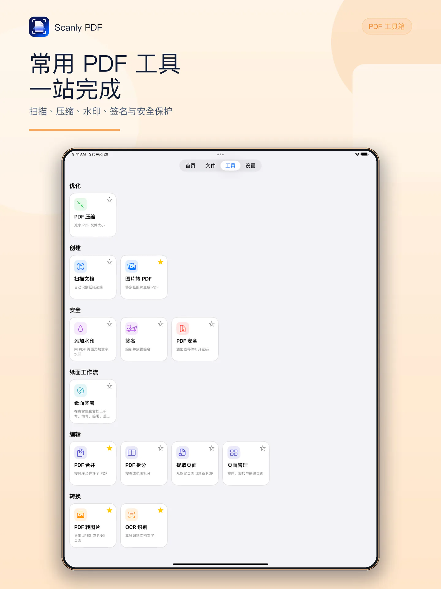
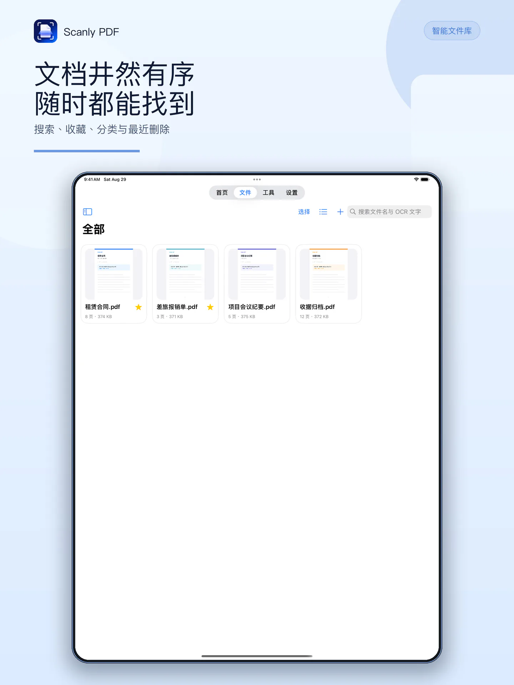
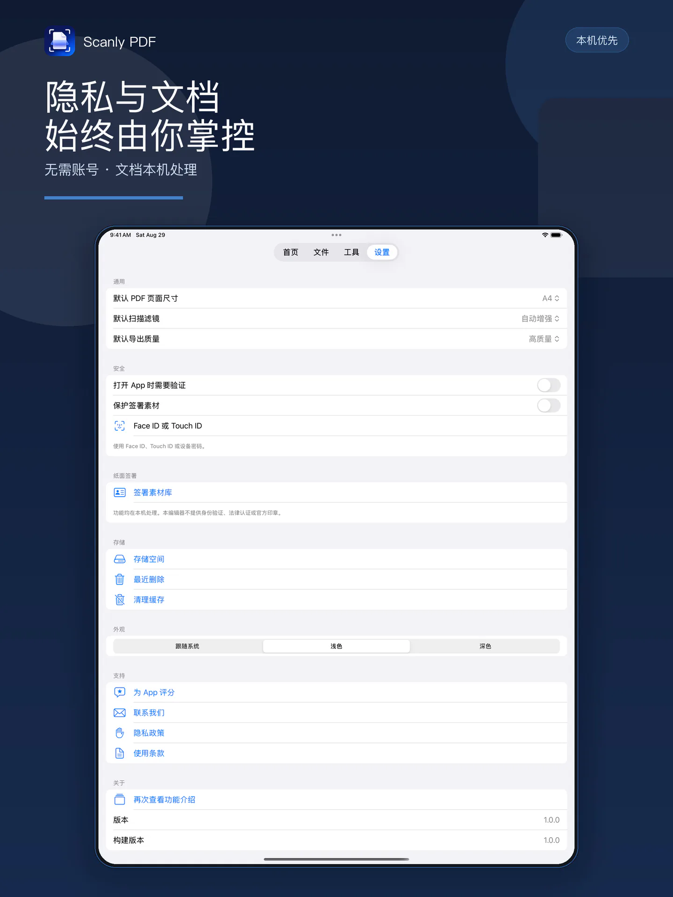